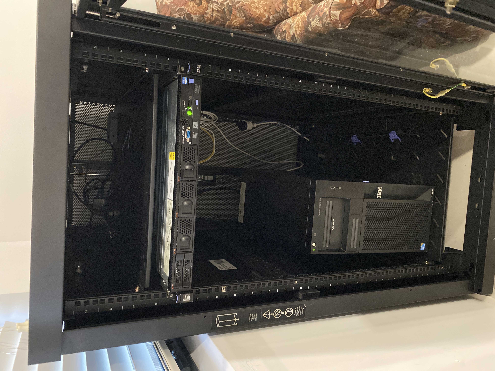

My amazing rack
So I now have a server rack! To be honest it is considerably larger than I was expecting, but otherwise it's quite a nice server rack (although it is currently quite loud lmao). The long term goal with this is to quieten it the down, as it is probably a little loud for the living room
My grand scheme, (well, one of them) is to swap the 240V fans out with some high speed be quiet! Silent Wings 4, which should hopefully provide enough air flow while being significantly quieter - although this will be probably quite a janky setup, involving a 240V >> 12V molex >> SATA power >> fan hub/controller >> fans lmao. I'll also probably add some sound deadening foam onto the sides of the case (and possibly the back if I can get enough airflow out of the top of the case with the fans)
